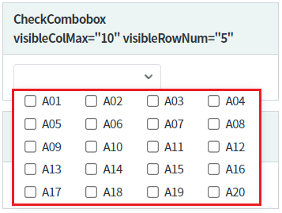
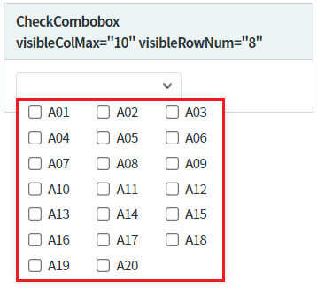
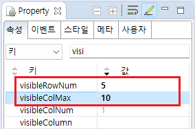
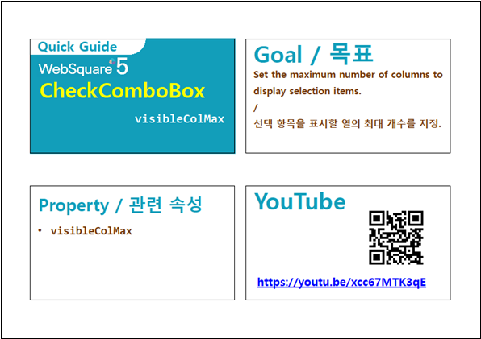

목록의 열 개수가 보여질 행 개수의 설정에 따라 동적으로 할당되는 예제입니다.
20개의 항목을 보여질 행 개수를 5개, 최대 열 개수를 10으로 지정한 상태
20개의 항목을 보여질 행 개수를 10개, 최대 열 개수를 8으로 지정한 상태
컴포넌트의 목록은 동일합니다. 항목은 총 20개로 구성되어있습니다. 설정값에 따라 출력된 목록을 비교합니다. 출력된 열 개수에 대한 산정 방법은 아래의 [구현 예시]에 설명되어 있습니다.
그림 1.브라우저(Chrome) 실행 예시 - 보여질 행 개수를 5개, 최대 열 개수를 10으로 지정

그림 2.브라우저(Chrome) 실행 예시 - 보여질 행 개수를 8개, 최대 열 개수를 10으로 지정

컴포넌트의 목록으로 출력될 데이터를 할당합니다. 하드 코딩, 스크립트로 할당, DataList 연동 모두 가능합니다. 데이터 할당하는 예시는 생략합니다.
목록의 데이터 할당 방법은 아래의 링크를 통해 확인할 수 있습니다.
[웹스퀘어5 SP5 개발 가이드] CheckComboBox 항목 설정
링크 : https://docs1.inswave.com/sp5_user_guide#2334962c3b4230e0
열의 개수 산정식
Math.min(visibleColMax, Math.ceil(itemCount / visibleRowNum))
설정 예시 "visibleRowNum=5, visibleColMax=8"
항목의 총 수가 40(visibleRowNum*visibleColMax)개보다 적은 경우에는 항목이 5배수 단위로 늘어날 때마다 열이 1개씩 추가됩니다.
항목의 총 수가 4개이면 4*1, 12개이면 5*3, 24개이면 5*5, 30개이면 5*6 직사각형 형태로 출력됩니다.
항목의 총 수가 40(visibleRowNum*visibleColMax)개보다 큰 경우에는 세로 스크롤이 생긴다. 목록은 5*8 직사각형 형태로 출력됩니다.
컴포넌트의 속성을 정의합니다.
visibleRowNum="5" //목록 확장 시 표현 될 항목의 개수. 총 건수가 지정된 값보다 많은 경우 스크롤이 생성됩니다.
("1"로 설정하는 것은 비권장합니다.)
visibleColMax="10" //열 개수가 계산될 때 최대 열의 개수.
visibleColNum 설정이 있을 경우 이 설정은 무시됩니다.
그림 3.웹스퀘어5 SP5 스튜디오의 Property View(속성창) 예시

<!-- CheckCombobox의 소스 본문 예시 --> <xf:checkcombobox visibleColMax="10" visibleRowNum="5"> <!-- 중략 --> </xf:checkcombobox>
visibleColMax
visibleRowNum
visibleColNum
[웹스퀘어5 SP5 개발 가이드] CheckComboBox
링크 : https://docs1.inswave.com/sp5_user_guide/8df43d1f59fab704#00d68253341f365d
[웹스퀘어5 SP5 개발 가이드] CheckComboBox 선택 목록의 최대 열 개수
링크 : https://docs1.inswave.com/sp5_user_guide/8df43d1f59fab704#e46072a4cceda820
CheckComboBox 선택 목록의 최대 열 개수
링크 : https://youtu.be/xcc67MTK3qE
